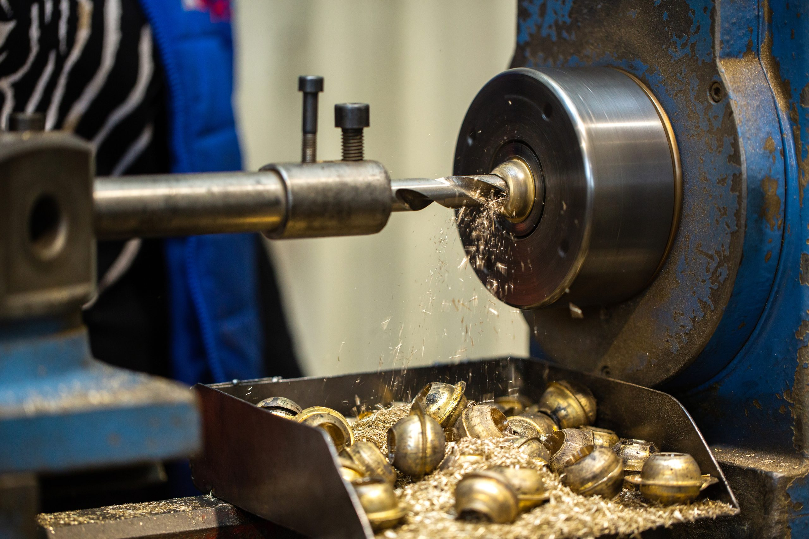
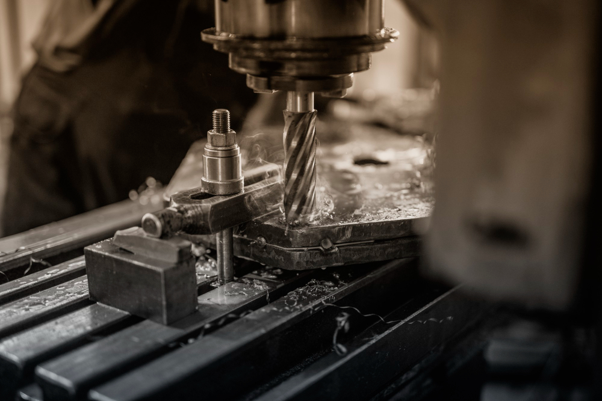
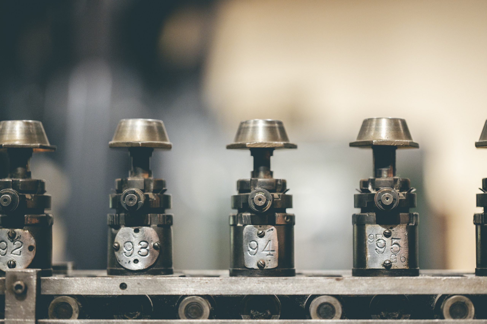
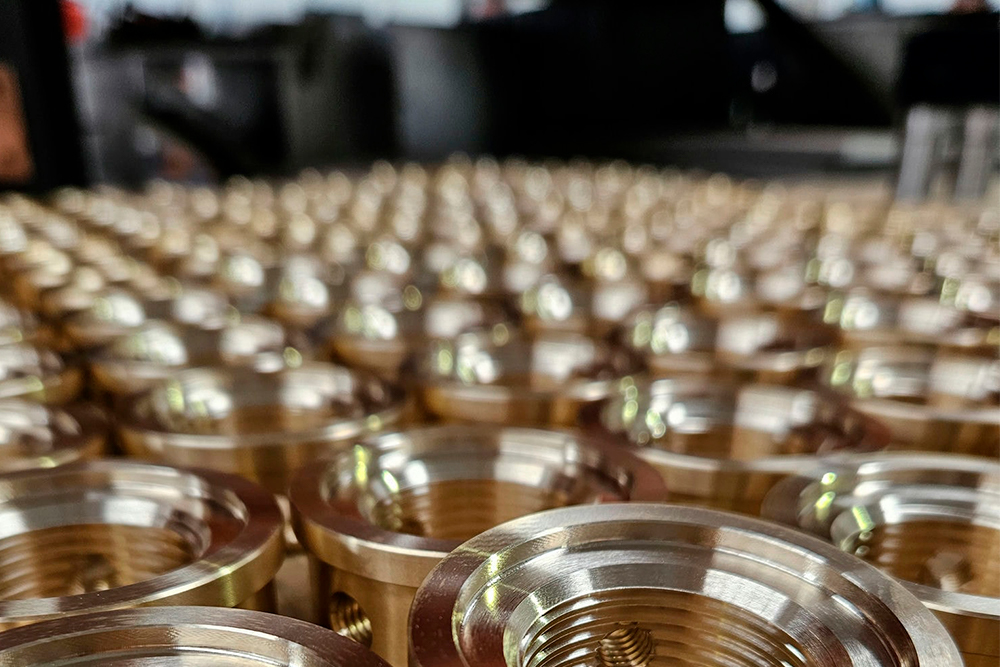

Mecanizado CNC
Torneado y fresado de alta precisión con maquinaria CMZ y Haas. Acero, aluminio, latón y plásticos técnicos, desde prototipos hasta grandes series.
Ver Mecanizado
Taller especializado en mecanizado CNC, torneado y fresado de alta precisión en Catarroja (Valencia). Transformamos tus ideas en piezas impecables con tecnología de última generación.

Nuestro equipo de profesionales altamente capacitados garantiza un servicio de calidad que responde a las necesidades de cada cliente. Desde prototipos hasta grandes series, adaptamos nuestros procesos para entregar resultados impecables.
Mecanizado CNC, transformadores de inducción y barreras anti-inundaciones. Tres líneas complementarias con un denominador común: la precisión industrial.
Torneado y fresado de alta precisión con maquinaria CMZ y Haas. Acero, aluminio, latón y plásticos técnicos, desde prototipos hasta grandes series.
Ver MecanizadoDiseño y fabricación a medida de transformadores de inducción e inductores para aplicaciones industriales, energéticas y tecnológicas.
Ver InducciónDiseño y fabricación de barreras para el agua a medida, para proteger accesos, naves, garajes y zonas sensibles frente a inundaciones.
Ver Barreras
Disponemos de equipos CNC de alta gama que nos permiten mantener tolerancias muy ajustadas y acabados impecables en cada pieza.
Desde la consulta inicial hasta la entrega de las piezas terminadas, cada paso está pensado para garantizar la máxima calidad y eficiencia.
Analizamos tu proyecto, planos y especificaciones. Asesoramos sobre materiales, tolerancias y procesos óptimos para tu pieza.
Programamos y ejecutamos el mecanizado con nuestra maquinaria de última generación, controlando cada variable del proceso.
Verificamos cada pieza con instrumentos de medición de precisión antes de la entrega, cumpliendo con los plazos acordados.



Proyecto de Modernización y Expansión Productiva: Mejora de la Competitividad en el Mecanizado de Ikun, cofinanciado por el IVACE en el marco del Plan ARA Empreses 2025.
Trabajamos con acero, aluminio, latón, plásticos técnicos y otros materiales industriales. Si tienes un material específico en mente, contacta con nosotros y te asesoraremos sobre su viabilidad en el proceso de mecanizado.
Sí, ofrecemos tanto prototipado como producción en pequeñas y grandes series. Adaptamos nuestros procesos según el volumen del pedido para garantizar que cada pieza cumpla con los estándares de calidad.
Nuestros servicios se adaptan a diferentes sectores: automotriz, aeroespacial, médico, industrial, energías renovables, ferroviario y más. Gracias a nuestra tecnología avanzada, podemos cumplir con los requisitos específicos de cada industria.
Depende de la complejidad y cantidad de las piezas. Ofrecemos plazos competitivos para pedidos estándar. Para proyectos urgentes o personalizados, podemos acordar plazos especiales.
Estamos en la C/ 29, Nave 314, Polígono Industrial de Catarroja, 46470 Catarroja (Valencia). Puedes ver la ubicación exacta en nuestra página de contacto.
Nuestro equipo está listo para atender tus necesidades, sin importar el tamaño del proyecto. Solicita presupuesto sin compromiso.